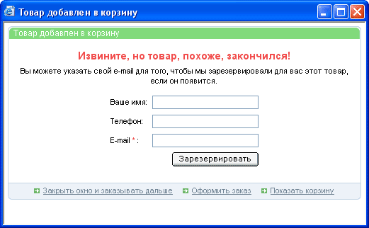

Начальное значение количества товара может быть задано тремя способами:
Когда количетсво товара определено в ноль, а статус товара любой кроме "Отсутствует", то при попытке заказать такой товар покупателю выдается сообщение о том, что данный товар, скорее всего, закончился. При этом покупателю предлагается оставить свой E-mail, на который автоматически будет отослано сообщение о появлении данного товара:

Следует учесть, что поле "Количество" является предельной величиной количества для каждого покупателя на заданный товар.